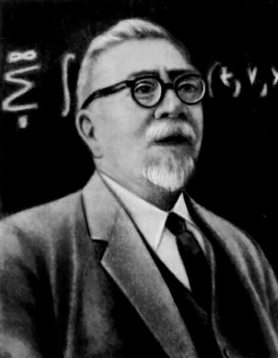

Норберт Винер.

Норберт Винер (26 ноября 1894 года - 18 марта 1964 года) - американский учёный, выдающийся математик и философ, основоположник кибернетики и теории искусственного интеллекта.
Родился Норберт Винер в еврейской семье в штате Миссури 26 ноября 1894 года. Его отец Лео Винер эмигрировал в Америку из России. Он преподавал славянские языки в Гарвардском университете и стал пионером изучения русской литературы в США. Это был незаурядный человек, знавший 20 языков и умевший блеснуть интеллектом. Но в полной мере его своеобразие проявилось в воспитании сына. Так, в 7 лет Норберт начал читать… Данте и Дарвина. В 11 лет он уже окончил среднюю школу, а в 14 получил степень бакалавра искусств. Норберт отличался от своих сверстников и потому был объектом постоянных издевательств и насмешек. Дети дали ему кличку Яйцеголовый. Как признавался сам Винер, в юные годы он «владел коллекцией клинических неврозов и душевных терзаний». В 18 лет Норберт получил степень доктора философии по математической логике в Гарвардском и Корнельском университетах. В 1913 году Винер отправился в Европу, чтобы продолжить обучение, но из-за грянувшей Первой мировой войны был вынужден поспешно вернуться на родину, где добровольно отправился в призывной пункт. Однако поступить на военную службу ему не удалось из-за сильной близорукости. В 1919 году отец устроил Норберта преподавателем математики в Массачусетский технологический институт. Преподавательская деятельность Среди студентов Винер заимел славу преподавателя «с причудами». Заходя в аудиторию, он не здоровался, как правило, громко сморкался, брал мел и начинал что-то быстро писать на доске. Причем порой, не окончив фразу, он хватался за тряпку и все стирал со словами: «Нет, это совершенно неверно». Покидал аудиторию преподаватель также без слов — за все время в университете Винер ни разу не объявил тему лекции, не принес на пары ни единого конспекта. При этом Норберт был крайне требователен к учащимся. По воспоминаниям одного из студентов, однажды по дороге домой он увидел на обочине автомобиль с пробитой шиной и его владельца, стоявшего рядом, — того самого преподавателя с «причудами». Парень остановился и предложил помочь, на что Винер потребовал у него зачетку. Помощь Норберт принял, лишь убедившись, что у молодого человека сдан зачет по математике. Рождение ЗРК, умных машин и кибернетики Правительство США обратило внимание на Норберта Винера, когда началась Вторая мировая война. Математика привлекли к работе над аппаратом для нужд американской ПВО. Он стал первым, кто предложил применять «массированный огонь» вместо стрельбы по отдельным воздушным целям. Именно Винер разработал зенитные ракетные комплексы, «научив» их самонаведению без посторонней помощи. Работу над «умными» машинами Норберт продолжил и после войны. Ему мы обязаны появлением современных компьютеров, предшественниками которых были ЭВМ, мало чем отличавшиеся от калькуляторов. Винер прежде всего хотел наделить свое детище блоком памяти, где будут складироваться управляющие сигналы и информация, поступающие в процессе работы. Он считал, что в ЭВМ «должна использоваться более экономичная двоичная, а не десятичная система исчисления». Да и сами ЭВМ, по Винеру, «должны состоять из электронных ламп, а не зубчатых передач или электромеханических реле». Кроме того, Норберт Винер явился основоположником кибернетики – науки об общих закономерностях процессов управления и связи в организованных системах: машинах, живых организмах и обществе. Кроме кибернетики этот чудак размышлял о телепортации. Так, он всерьез предлагал какой-нибудь объект тщательно изучить, а затем собранную информацию послать в пункт назначения, где по описанию в точности воссоздать требуемый предмет. Причем он хотел перемещать так не только неодушевленные объекты, но и людей. Эта идея, по счастью, так и осталась неосуществленной, в отличие от других открытий Норберта Винера, за которые он был награжден. Триумф и финал В январе 1964 года Винера удостоили высшей для американского ученого награды – Национальной научной медали США. На торжественном обеде в Белом доме, посвященном этому событию, президент США Линдон Джонсон обратился к Винеру: «Ваш вклад в науку на удивление универсален, ваш взгляд всегда был абсолютно оригинальным, вы потрясающее воплощение симбиоза чистого математика и прикладного ученого». Но Винер и тут не изменил себе. Во время речи президента ученый начал громко сморкаться‚ а после спрашивал у соседей‚ что сказал этот джентльмен. Умер Норберт Винер 18 марта 1964 года в Стокгольме.